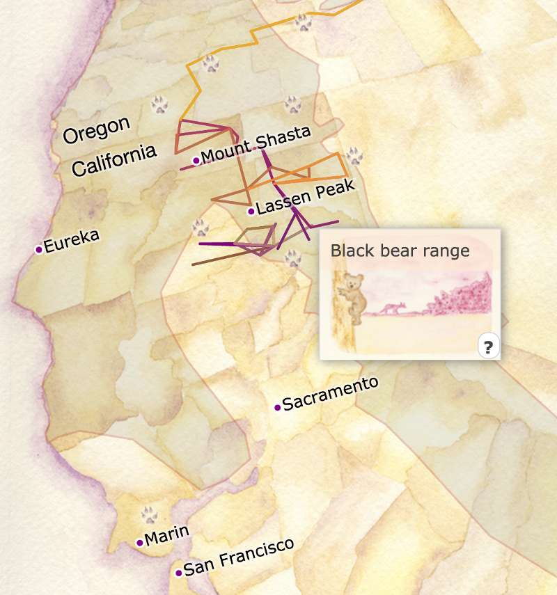

From the original site
This archived piece preserves its original text and historical context.
A map of OR-7's travels through Oregon and California
A map of the travels of the first wolf back in California in nearly a century, based on data from the California Department of Fish & Wildlife's public. The map is a satellite projection on top of a hand-painted watercolor map. The use of a true projection allows it to overlay related datasets, such as the range of black bears, golden eagle sightings, or ecoregions of the west.

What went right
The Level 3/4 ecoregions are an incredible distillation of what was originally a 94MB shapefile down to a 300k topojson file. The highways look great, and the scenes are beautiful.
What went wrong
The path of the wolf is simple straight-line connections of purposefully coarse data released by CDFW (for good reason, you wouldn't want to risk someone using high-resolution data to shoot OR-7). The CSS positioning under the hood is an absolute mess to make the data layer properly overlay the watercolor.
The next version would have
A higher resolution track, tied to a date slider, that samples the ecoregions visited during that period to give a sense of where OR-7 was ecologically, along with how many Golden Eagles or cows or square miles of highway he might have seen, would be lovely.